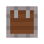
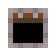
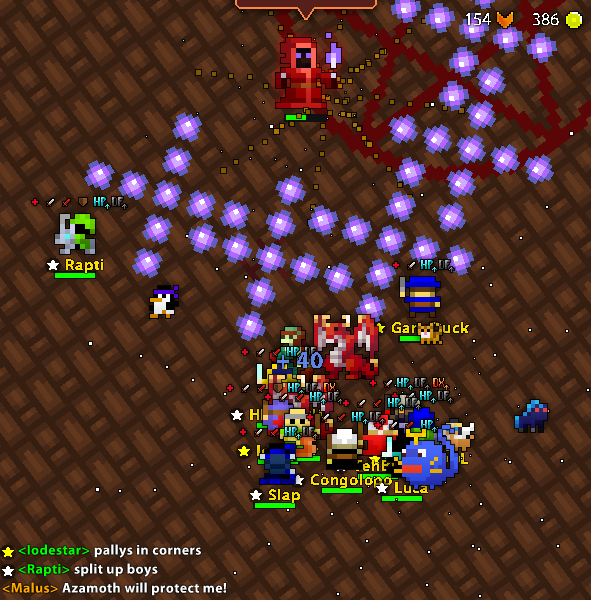
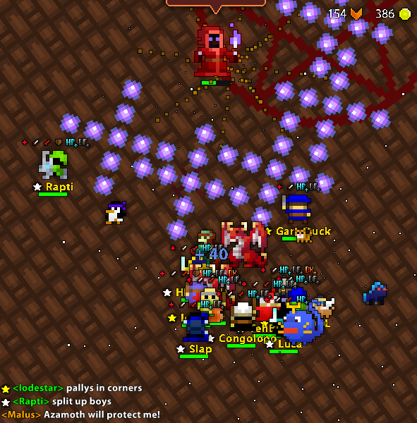
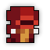
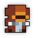
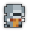
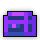

| Last updated: Exalt Version 5.12.0.0 (June 2025) |
|---|
|  |
| Dust Drops | ||
|---|---|---|
| 30-38 |
29-37 |
26-30 |
The Cultist Hideout is a very high-level dungeon that is a sub-area of the Lost Halls. This dungeon is one of the Exaltation dungeons, boosting Speed.
The trapdoor to the Cultist Hideout is initially closed but will open once players collect 3 pink flames in the Lost Halls and defeat the Agonized Titan. The trapdoor is located behind the Titan. Note that once you enter the Cultist Hideout, you can not go back to the Lost Halls.
It is a source of Tier 6 Rings, the Cultist Necromancer UT Set, Storm Shaman Set Shard, and the only source of the Vial of Pure Darkness, which is required to open an entrance to The Void after defeating the Marble Colossus in the main Lost Halls dungeon. One vial is a guaranteed drop from Malus, the boss of the Cultist Hideout, to a random player in the group. It is not possible for more than one vial to drop from a given instance of the dungeon.
This dungeon must be completed to earn ‘Travel of the Decade‘, ‘Hero of the Nexus’ and ‘Realm of the Mad God’ fame bonuses.
| The Realm Eye says: |
|---|

When researchers ran out of souls from voluntary donors, the necromantic cultists turned to imprisoned outlaws for additional souls. Fearing pushback from the holy church leaders overseeing the project, the cultists put together a secret hideout further beneath the corridors for concealing their captives. When the halls were overtaken by the Void Entity, the remaining necromancers were sealed inside and had to retreat to their hideout. |
See the Cultist Hideout Guide for a complete walk-through on the dungeon and all its enemies.
The Cultist Hideout consists of a short series of long narrow hallways made of brown bricks. The enemies are found in small groups throughout the dungeon. Malus and his cultists are found in a large square room with a pentagram in the middle. There is a chance to encounter a small room off the main path which contains two graves. This room serves no purpose aside from lore (see Trivia section).
 

|
 Follower of Malus |
Follower of Argus |
 Follower of Gaius |
Follower of Basaran |
|  Follower of Dirge |
Follower of Valus |
Follower of Phaedra |
The Follower of Valus will spawn elemental demons to assist in combat.
Malus is the leader of the Cultists and the main boss. He is assisted by Argus, Gaius, Basaran, and Dirge. In the last phases of the fight, Followers will begin spawning from the small magic circles.
At certain phases in the fight, Malus will summon an archdemon (first Molek, then Balaam) to fight in place of the Cultists. The demons must be defeated to continue. Note that Molek will also spawn lesser demons (see above) as supports.
The Cultist Hideout is part of the Epic Quest pool from the Tinkerer and has two associated quests.
| Name | Description | Items Needed | Reward |
|---|---|---|---|
| The Cultist | Defeat Malus in the Cultist Hideout. |  |
 |
| Havoc in the Halls | Take down Malus and the Marble Colossus for otherworldly rewards! |  |
 |
The Cultist Hideout is less threatening than the other areas in the Lost Halls, but players can still easily die if they are not careful. The bosses attack with dense clusters of projectiles in various “shapes”. It is critical to dodge these, as taking many hits at once can prove fatal. Focus on avoiding the fire, electric, and ice attacks from Malus, Gaius, and Basaran respectively, as they inflict Armor Broken, Paralyzed, and Slowed.
Interestingly, the correct path to choose at a branch is always the one with no beam hanging over it.
The Cultist Hideout was released in Patch X.16.0 (Aug 2017), along with the rest of the Lost Halls.
Patch X.26.0.0 (May 2018), the entirety of the Lost Halls, including the Cultist Hideout, received major revisions.
Before Exalt Version 2.3.2.0 (June 2022), the Cultist Hideout had a difficulty rating of 7.
Before Exalt Version 5.11.0.0 (May 2025), dungeon completion gave 91-213  with 60% chance, 36-84
with 60% chance, 36-84  with 50% chance and 8-19
with 50% chance and 8-19  with 40% chance.
with 40% chance.
Before Exalt Version 5.12.0.0 (June 2025), dungeon completion gave 26-34  , 20-28
, 20-28  and 18-22
and 18-22  .
.
Although there are only 5 Cultist bosses, there are 7 Cultist Shots and Followers. This is referencing the 2 cultists (named Phaedra and Valus) that were killed during the incident that corrupted the Lost Halls and forced the Cultists to flee to this hideout. This is described in the Records of the Lost Halls.
The small room containing two gravestones references Valus and Phaedra.
The 5 Cultists (Malus, Gaius, Argus, Basaran, Dirge) are named after Colossi in the video game Shadow of the Colossus, including the 2 deceased onces (Phaedra and Valus). Most notably, Malus (the leader and main boss) is the name of the final Colossus.
The “Azamoth” the Cultists worship is actually the true name of The Forgotten King, the third and final boss of The Shatters only revealed in the hard mode route, implying that they worshipped and drew power from him or another force with the same name.


{kind=link}